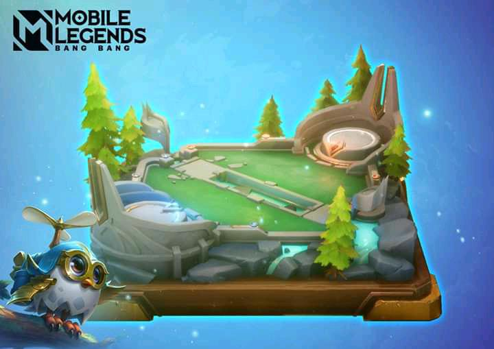

Arena Mobile Legends
Halo Semuanya!Saya Annisa. Saya akan menjelaskan tentang mode eksperimental baru.
Arena adalah mode game eksperimental, dengan gameplay yang mirip dengan game tower rush. Apa dari arti eksperimental? Mode eksperimental adalah prototipe untuk gameplay jenis baru, didesain untuk memberikan pengalaman yang berbeda dari mode biasa seperti 5v5, Brawl, dll. Mereka mungkin akan sangat jauh berbeda dari mode waktu terbatas, seperti mode Deathbattle, Mayhem, atau Mirror.
Selain itu mode eksperimental dapat memperoleh Feedback dari komunitas ditahap awal pengembangan game ini, dan dapat melakukan perubahan dan penyesuaian secepatnya. Ada banyak hal yang harus dipertimbangkan sebelum dirilis suatu mode kembali. Misalnya Update yang terus menerus terjadi mungkin telah menghadirkan terlalu banyak konten. Penyesuaian Hero, Equipment, Bug, dll. Dan semua ini dapat merusak pengalaman bermain dari mode lama yang dirilis kembali.